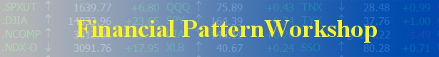

<!--
@license
Copyright (c) 2016 The Polymer Project Authors. All rights reserved.
This code may only be used under the BSD style license found at http://polymer.github.io/LICENSE.txt
The complete set of authors may be found at http://polymer.github.io/AUTHORS.txt
The complete set of contributors may be found at http://polymer.github.io/CONTRIBUTORS.txt
Code distributed by Google as part of the polymer project is also
subject to an additional IP rights grant found at http://polymer.github.io/PATENTS.txt
-->

<link rel="import" href="../bower_components/polymer/polymer.html">
<link rel="import" href="../bower_components/app-route/app-location.html">
<link rel="import" href="../bower_components/app-route/app-route.html">
<link rel="import" href="../bower_components/iron-pages/iron-pages.html">

<!-- <link rel="import" href="news-data.html"> -->
<link rel="import" href="news-nav.html">
<link rel="import" href="financial-footer.html">
<link rel="import" href="financial-company.html">
<link rel="import" href="financial-contact.html">

<dom-module id="financial-pattern-work">

  <template>

    <style>
      :host{
        display: block;
        color:#000000;
        width:43%;
        margin:30px auto;
        padding:0;
        height:auto;
      }
      .freeFunction{
        text-align: center;
      }
      .freeFunction img{
        vertical-align: middle;
      }
      ul li{
        margin:5px;
        padding:5px 0;
      }
      a{
        font-weight: bold;
      }
    </style>
    <div class="financialPatternWork">
      <form id="PatternWorkshopProForm" name="fpwindexForm" action="[[loginUrl]]/wbmpinitial" method="POST" target="_blank">
        <input type="hidden" name="PatternWorkshopPro" value="" id="submitValue">
        <!-- <input type="hidden" name="fpwulvl" value="$fpwulvl$">
        <input type="hidden" name="mlid" value="$fpwusernameid$">
        <input type="hidden" name="mlid4" value="$fpwusernameid4$">
        <input type="hidden" name="WhereOrderFrom" value="INDX">
        <input type="hidden" name="mlmfvar" value="leavemealone">
        <input type="hidden" name="hdfpwaddnoise" value="AN: 0"> -->
      </form>
      <div ></div>
      <div>
        <span>Login Time:[[time]]</span><span>Hi,[[userName]]
        <a name="record" href="/test/home/record">User01</a></span><a href="#">Sign Out</a>
      </div>
      <hr color="ffc875"/>
        <ul>
          <li><a href="/test/home/PatternWorkshopPro" name="PatternWorkshopPro">PatternWorkshop Pro</a>:For system developers.  Provides many tools to work on simulation outputs.  Discovers optimizing conditions, proper managing rules, optimized  portfolios combined from multi-models and much more. For more express links:
            <a href="/test/home/ForwardStatistics" name="ForwardStatistics">Forward Statistics</a>,
            <a href="/test/home/PortfolioManager" name="PortfolioManager">Portfolio Manager</a></li>
          <li><a href="/test/home/PatternWorkshop" name="PatternWorkshop">PatternWorkshop</a>:For traders and system developers. It is a full simulation platform to simulate sophisticated models with full managing rules. To review the last studied model: <a href="/test/home/PatternWorkshopPro" name="PatternWorkshopPro">Simulation Result</a></li>
          <li><a href="/test/home/MarketPulsePro" name="MarketPulsePro">MarketPulse Pro</a>:: For traders and system developers.  It is a simplified simulation platform to find trading patterns among a group of stocks, then lets the MarketPulse to monitor the patterns.</li>
        </ul>
        <p class="freeFunction"><font face="Comic Sans MS" color="red">Free test Users can only use part of below functions</font></p>
        <ul>
          <li><a href="/test/home/MarketPulse" name="MarketPulse">MarketPulse</a>:This is for all kinds of traders. It is a real time Intraday Stock Screener. It works in any time frame with any criteria for over 4000 symbols in the US stock markets.</li>
          <li><a href="/test/home/MPStatistics" name="MPStatistics">MP Statistics</a>:Designed for really active short-term intraday stock traders, who buy and sell stocks again and again in just minutes or even in seconds.</li>
          <li>
            <template is="dom-if" if="[[ifLink]]">
              <a name="easyToUse" href="/test/home/easyToUse">Easy-to-Use tools</a>
            </template>

              <a href="jsvascript:void(0);">Easy-to-Use tools</a>

              : For entry level researchers and system developers.
              <table>
                  <tr><td><a href="/test/home/AnalogAnalytictool" name="AnalogAnalytictool">Analog Analytic tool </a></td><td><a href="/test/home/ZoneAnalytictool" name="ZoneAnalytictool"> Zone Analytic tool</a></td><td><a href="/test/home/SwingAnalytictool" name="SwingAnalytictool">Swing Analytic tool </a></td><td><a href="/test/home/EconData" name="EconData"> Econ-Data</a></td></tr>
                  <tr><td><a href="/test/home/SeasonalAnalytictool" name="SeasonalAnalytictool">Seasonal Analytic tool </a></td><td><a href="/test/home/SNRAnalytictool" name="SNRAnalytictool"> SNR Analytic tool </a></td><td><a href="/test/home/LeadingIndicatortool" name="LeadingIndicatortool"> Leading Indicator tool </a></td><td><a href="/test/home/IRQ" name="IRQ"> IRQ</a></td></tr>
                  <tr><td><a href="/test/home/DetailCharttool" name="DetailCharttool">Detail Chart tool </a></td><td><a href="/test/home/MultiMarketsChart" name="MultiMarketsChart"> Multi-Markets Chart </a></td><td><a href="/test/home/DataExtracttool" name="DataExtracttool"> Data Extract tool</a></td><td><a href="/test/home/Holidays" name="Holidays">Holidays</a></td></tr>
              </table>
          </li>
        </ul>
        <div><span>To run FPW, one needs to keep this page open. One can minimize it, but should
          not close it or leave it for any other web pages, otherwise one would logout.</span></div>
      </div>
    </div>
  </template>
  <script>

    Polymer({

      is: 'financial-pattern-work',

      properties: {
        userName: String,
        time: String,
        ifLink:String,
        page: {
          type: String,
          observer: '_pageChanged'
        },
        pagepath: {
          type: String
        },
        pageName:String,
        loginUrl:String,
        userName:String,
        userName4:String,
        serviceData:String,
      },

      observers: [
        '_routePageChanged(routeData.page)',
      ],

      listeners: {

      },

      _networkSnackbar: null,

      created: function() {
        // Custom elements polyfill safe way to indicate an element has been upgraded.
        this.removeAttribute('unresolved');

        // Chrome on iOS recomputes "vh" unit when URL bar goes off screen. Since we use "vh" unit
        // to size the cover image and the title, those items will resize in response to the URL
        // bar being shown or hidden. FWIW, this is not an issue in Chrome 56 on Android or iOS
        // Safari. To workaround this on Chrome on iOS, we will use a
        // fixed viewport height in places where normally relying on "vh" unit and replace them with
        // custom property "--viewport-height".
        var ua = navigator.userAgent;
        var cMatch = navigator.userAgent.match(/Android.*Chrome[\/\s](\d+\.\d+)/);
        if (ua.match('CriOS') || (cMatch && cMatch[0] && cMatch[1] < 56)) {
          document.body.classList.add('fixed-viewport-height');
        }

      },

      attached: function() {
        Polymer.RenderStatus.afterNextRender(this, function() {
          this.listen(window, 'online', '_notifyNetworkStatus');
          this.listen(window, 'offline', '_notifyNetworkStatus');
        });
      },

      detached: function() {
        this.unlisten(window, 'online', '_notifyNetworkStatus');
        this.unlisten(window, 'offline', '_notifyNetworkStatus');
      },

      _routePageChanged: function(page) {
        if (!page) {
          // set default route if route path is empty
          // this.set('route.path', 'list/home');
          this.set('route.path', 'test/home/login');
          return;
        }
        this.page = page;
        this.pagepath =  this.route.path;
        var remainingPieces = this.pagepath.split('/');
        this.pageName = remainingPieces[3];//这种是对应 this.set('route.path', 'instantloading/home');
        // this.pageName = remainingPieces[1];//这种是对应 this.set('route.path', 'home');
        // Scroll to the top of the page on every *route* change. Use `Polymer.AppLayout.scroll`
        // with `behavior: 'silent'` to disable header scroll effects during the scroll.
        // Polymer.AppLayout.scroll({ top: 0, behavior: 'silent' });
        // Close the drawer - in case the *route* change came from a link in the drawer.
        this.$.nav.closeDrawer();
      },

      _pageChanged: function(page, oldPage) {
        var href;
        var path = this.route;
        switch(page) {
           case 'login':
             href = 'financial-login.html';
             break;
           default:
             href = 'news-path-warning.html';
             break;
         };
        this.importHref(
            this.resolveUrl(href),
            null,
            null,
            true);
      },
      submitValueAll:function(mlmfile){
            var submit=this.$.submitValue;
            var username=this.userName;
            var username4=this.userName4;
            var servicedata=this.serviceData;
            submit.value='{"mlid": "'+username+'","mlid4": "'+username4+'","fpwulvl":"'+servicedata+'","mlmfile":"'+mlmfile+'","WhereOrderFrom":"INDX","mlmfvar":"leavemealone","hdfpwaddnoise":"AN: 0"}';
            var login=this.loginUrl;
            this.$.fpwindexForm.action=login+"/"+mlmfile;
            this.$.fpwindexForm.submit();
          },
       _PatternWorkshopPro:function(){
           this.submitValueAll(wbfpwoutput);
      },
        _forwardStatistics:function(){
           this.submitValueAll(wbfpwstat);
        },
        _portfolioManager:function(){
           this.submitValueAll(wbfpwport);
        },
        _patternWorkShop:function(){
           this.submitValueAll(wbfpwsimu);
        },
        _simulationResult:function(){
           this.submitValueAll(wbfpwoutput);
        },
        _marketpulsePro:function(){
           this.submitValueAll(wbstmpsimu);
        },
        _margketPulse:function(){
           this.submitValueAll(wbmpinitial);
        },
        _MPStatistics:function(){
           this.submitValueAll(wbfpwmpstat);
        },
        _analogAnalyticTool:function(){
           this.submitValueAll(wbstanalog);
        },
        _zoneAnalyticTool:function(){
           this.submitValueAll(wbstfpz691);
        },
        _swingAnalyticTool:function(){
           this.submitValueAll(wbstswing);
        },
        _seasonalAnalyticTool:function(){
           this.submitValueAll(wbstsea);
        },
        _SNRAnalyticTool:function(){
           this.submitValueAll(wbstsnr);
        },
        _leadingIndicatorTool:function(){
           this.submitValueAll(wbstleadi);
        },
        _IRQ:function(){
           this.submitValueAll(wbfpwir);
        },
        _detailChartTool:function(){
           this.submitValueAll(wbstchart);
        },
        _multiMarketChart:function(){
           this.submitValueAll(wbstmmct);
        },
        _dataExtractTool:function(){
           this.submitValueAll(wbstrdata);
        },

          });

  </script>

</dom-module>
